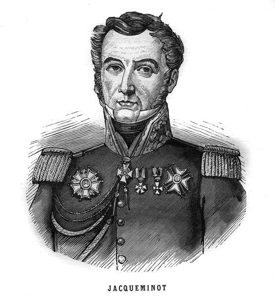
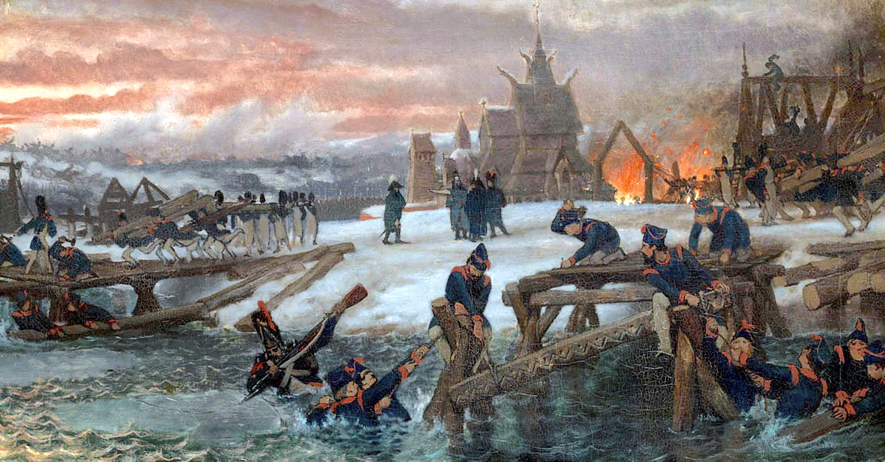
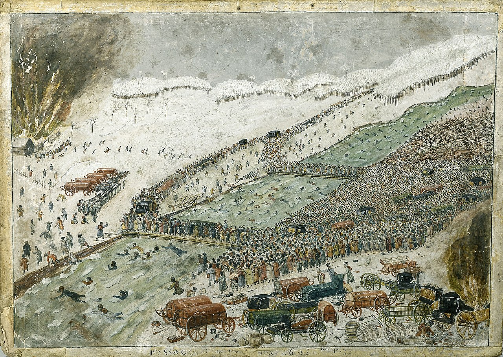
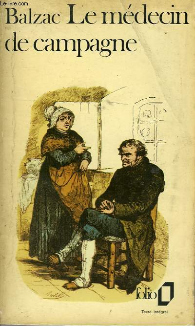

네덜란드의 희생과 헌신 - 베레지나 강의 다리
게시: 2021-09-20T06:30:48+09:00
이른 아침 베레지나 서쪽 강변에서 러시아군이 물러가는 것을 확인하지마자, 나폴레옹은 자끄미노(Jean-François Jacqueminot) 중령에게 명하여, 엽기병이 일부 섞인 폴란드 창기병 1개 중대에게 각각 안장 뒤에 유격병(Voltigeur, 펄쩍 뛰는 사람이라는 뜻) 1명씩을 태우고 강을 건너도록 했습니다. 스투지엔카 마을 앞은 여울목이라서 베레지나 강의 수심은 최대 2m 미만이었고 말을 타고 건널 경우 허리춤의 탄약포를 적시지 않고 강을 건널 수 있었기 때문이었습니다. 이들은 강을 건넌 뒤 유격병들을 내려놓고 부채살처럼 퍼져 그 일대에 아직 남은 소수의 코삭 기병들을 쫓아냈습니다. 유격병들은 그 일대에 배치되어 사방을 경계했습니다.

(자끄미노 중령입니다. 당시 25세에 불과했던 그가 중령 계급까지 승진할 수 있었던 이유는 그가 나폴레옹도 배출한 프랑스 정식 사관학교(École Militaire)를 나온 인재인데다 어린 나이부터 아우스테를리츠, 에슬링, 바그람 등 주요 전투에 모두 참전한 베테랑이었기 때문이었습니다. 그는 나폴레옹이 엘바 섬을 탈출하여 백일천하를 일으키자 즉각 나폴레옹 편에 붙었고, 콰트르 브라(Quatre Bras)와 워털루(Waterloo)에서도 창기병대를 이끌고 잘 싸웠습니다. 워털루 전투 이후, 장성급 지휘관이 아니었던 그는 문책을 받지 않고 그냥 부르봉 왕가 하에서 군 복무를 계속할 수 있었으나 부르봉 왕가에 대한 충성을 거부, 1달간 감금된 뒤 강제 전역 당했습니다. 이후 그는 므즈(Meuse) 지방에 큰 실크 공장을 차려 나폴레옹 휘하에서 복무했던 병사들에게 일자리를 제공했고, 그렇게 영향력을 키운 뒤 명사회에 선출되어 극우 왕당파 거물인 폴리냑(Jules de Polignac)을 하야시키기도 했습니다. 1830년 7월 혁명으로 인해 샤를 10세(Charles X)가 람부이예(Rambouillet)로 도피하자, 람부이예로 민중 원정을 조직하여 샤를 10세가 퇴위하는데 결정적인 공헌을 하기도 했습니다. 그는 루이 필립(Louis Philippe) 왕 밑에서는 국민방위군(Garde nationale) 사령관을 맡았는데, 1848년 2월 혁명 때도 루이 필립 왕을 위해 국민 시위대에게 발포하는 것을 거부하여 2월 혁명 성공에 중대한 단초를 제공했습니다. 이후 그는 깨끗이 은퇴했고 철저한 민중파 인물로 남았습니다.) 강 건너의 안전이 확보된 오전 8시 경, 드디어 네덜란드인들로 이루어진 부교병들이 작업을 시작했습니다. 이들은 어떻게 얼음물처럼 차가운 베레지나 강 속에 가교를 위한 지지대를 박았을까요? 그냥 맨몸으로 들어갔습니다. 정말 맨몸으로, 그러니까 웃옷을 다 벗고 들어갔습니다. 어차피 강물은 사람 턱까지 올라가는 높이였으므로 옷을 입고 있어봐야 아무런 도움이 되지 않았던 것입니다. 부교병들은 얼음판들이 떠내려오는 차가운 베레지나 강 속으로 옷도 입지 않고 밤새 조립한 지지대를 들고 걸어들어갔습니다. 그냥 강변에 셔츠바람으로 서있어도 얼어죽을 판인데 얼음장 같은 강물 속에서 사람이 오래 버틸 수는 없습니다. 이 부교병들의 현장 지휘관인 벤틴(George Diederich Benthien) 대위는 그의 부하 부교병들이 딱 15분씩만 번갈아가며 강물 속에 들어가 작업을 하도록 조를 짰습니다. 그리고 본인도 직접 옷을 벗고 강물 속으로 들어가 작업을 지휘했습니다. 물론 그럼에도 불구하고 많은 부교병들이 저체온증으로 목숨을 잃었습니다. 이들을 위협하는 것은 단지 강물의 낮은 온도 뿐만이 아니었습니다. 강바닥은 눈에 보이지도 않고 진흙과 이끼 낀 돌 등으로 인해 미끄럽습니다. 게다가 부교병들은 무거운 목재를 들고 있었고 강 위로는 끊임없이 큼직한 얼음판이 떠내려와 부교병들을 들이받았습니다. 적지 않은 부교병들이 아차 하는 사이에 발을 미끄러져 강물에 떠내려가 목숨을 잃었습니다. 벤틴 대위의 지휘 하에 놓이던 다리는 사람과 말을 위한 것이었고, 대포와 짐마차 등을 위한 더 크고 튼튼한 다리가 따로 있어야 했습니다. 이건 부쉬(von Hauptmann Busch)라는 대위가 지휘하는 또 다른 네덜란드 부교병들에 의해 약 50m 더 하류 쪽에서 만들어지고 있었습니다.

(다리를 놓고 있는 부교병들입니다. Schilderij van Lourens Alma Tadema의 그림인데, 부교병들은 실제로는 옷을 입지 않고 작업을 했습니다. 벤틴 대위는 이 작업에 참여하고도 살아남아 훗날 네덜란드 왕국이 개국된 후 네덜란드군에서도 공병 장교로 복무했습니다. 총 400명의 부교병들 중 최후까지 살아남은 사람은 딱 6명이었다고 합니다.) 맨살을 드러낸 채 추위에 벌벌 떨며 물 속에 들어가는 제1조를 보던 나머지 부교병들은 마음이 착잡했을 것입니다. 곧 자기들도 저 차가운 강물 속으로 들어가야 하는데, 먼저 들어간 동료들이 바로 눈 앞에서 비명도 못 지르고 추위에 굴복하여 쓰러지거나 발이 미끄러져 물에 떠내려가는 등 계속 희생되고 있었던 것입니다. 그럼에도 불구하고 강물 속으로 들어가는 것은 정말 대단한 용기를 필요로 했습니다. 이때 부교병들에게는 1인당 50프랑(현재 가치로 대략 86만원, 당시 프랑스 병사의 50일치의 일당)의 특별 수당을 주겠다는 발표가 있었습니다만, 그게 목숨보다 소중할 리는 없었습니다. 이때 부교병들은 전체 그랑다르메의 운명이 오로지 자신들이 놓는 다리에 달려 있다는 것을 잘 알고 있었고, 수만 명의 동료들에 대한 사명심으로 베레지나 강에 뛰어들었습니다. 우디노 휘하의 척탄병인 프랑수아 필스(Francois Pils)라는 병사의 수기에 따르면 부교병들은 그런 악조건 속에서도 작업 내내 사기충천하여 정력적으로 일했다고 합니다. 부교병들이 그런 용기를 낼 수 있었던 이유 중 하나에는 나폴레옹이 바로 강변에서 지켜보고 있다는 사실도 한몫 했을 것입니다. 필스에 따르면 나폴레옹은 강둑 위를 떠나지 않고 우디노와 뮈라 등의 쟁쟁한 장군들과 함께 계속 부교병들의 작업을 지켜보고 있었습니다. 벤틴 대위가 작업하던 인마용 임시 다리는 오후 1시 경에 완성되었습니다. 다리의 완성도는 많이 떨어지는 편이었습니다. 다리의 길이는 100m, 너비는 4m 정도였고 다리 상판은 그저 둥근 통나무들을 가로로 깔고 그 위에 얇은 널빤지와 나뭇가지, 짚단 등을 깔았을 뿐이었습니다. 그러나 이건 남은 약 4만의 병력, 그리고 거의 같은 수의 낙오병 및 민간인들이 살아서 고향 땅을 밟을 수 있는 소중하고 유일한 탈출구였습니다. 다리가 완성된 후 제일 먼저 다리를 건너는 부대도 부교병들 못지 않게 위험한 임무를 맡게 되어 있었습니다. 속임수에 넘어간 것을 깨달은 치차고프가 언제든 남쪽으로부터 대군을 몰고 북상할 수 있었기 때문이었습니다. 그리고 그를 막기 위해 나선 것은 우디노였습니다. 현장에 있던 필스의 수기에 따르면 1차로 강을 건널 부대와 함께 우디노가 직접 다리를 건너려는 것을 보고 나폴레옹이 "아직 건너지 말게, 우디노, 까딱하다간 러시아군의 포로가 될 수도 있어"라고 소리를 질렀다고 합니다. 그러자 우디노는 "저는 이들과 함께라면 아무 것도 두렵지 않습니다, 폐하!"라고 답하고는 병사들에게 "황제폐하 만세 (Vive l'Empereur)"를 외치게 한 뒤 다리를 건넜습니다. 실로 오랜만에 울려펴진 함성 소리였습니다. 이들은 다리를 건넌 뒤 곧장 좌회전하여 치차고프가 있는 남쪽으로 사라져 전개했습니다. 이들이 시야에서 사라질 무렵 또 눈이 내리기 시작했습니다. 포병대 및 수송대를 위한 더 튼튼한 두번째 다리는 오후 4시 경에 완성되었고, 역시 이 다리를 통해 제일 먼저 다리를 건넌 것은 우디노 군단 소속 포병대로서 이들도 남쪽으로 전개했습니다.

(현장에서 이 다리를 본 사람이 그린 그림이라고 하는데, 실제로는 이 다리들의 길이는 100m 정도로서 그림 속에 표현된 것보다 훨씬 더 길었습니다. 이 그림에는 많은 사람들이 강물 속에 뛰어든 것으로 나오는데, 이 무질서는 11월 28일 이후 낙오병들과 민간인들이 마지막에 도강하면서 벌어진 일이며 26~27일의 정규군 도강 때는 이렇지 않았습니다. 실제로 저 그림 속 빽빽히 몰려든 사람들의 복장이 제각각인 것을 보실 수 있습니다.)
나폴레옹은 도강에 있어서 가장 중요한 것이 질서와 우선 순위라는 것을 잘 이해하고 있었습니다. 그는 다리가 완성되기 한참 전에 어느 부대부터 다리를 건널 것인지, 그리고 다리를 건너자마자 어떻게 전개할 것인지 미리 다 계획을 짜두었습니다. 언제나 그렇듯이 가장 먼저 다리를 건너야 하는 것은 대포와 탄약차였고, 가장 나중에 다리를 건너야 하는 것은 낙오병들과 민간인들이었습니다. 이를 위해 다리 입구에는 헌병(gendarme)들이 전개하여 낙오병과 민간인들이 접근하지 못하도록 했습니다. 덕분에 도강은 순조롭게 진행되었습니다. 걱정했던 비트겐슈타인의 부대의 내습은 적어도 11월 27일 오전까지도 없었습니다. 저녁 8시, 포병대용 다리의 총 23개 지주 중 2개가 무너지면서 다리가 끊겼습니다. 인근에서 모닥불을 피우고 피로와 추위로 얼어붙은 몸을 녹이고 있던 부교병들은 다시 옷을 벗고 물 속에 뛰어들어야 했습니다. 3시간의 중노동 끝에 밤 11시 다리 통행이 다시 가능해졌습니다. 그러나 3시간 후인 새벽 2시, 이번에는 하필 가장 깊은 지점에 세워졌던 지주 3개가 무너지면서 또 다리가 끊겼습니다. 부교병들은 다시 옷을 벗어야 했습니다. 이번에는 4시간 후인 새벽 6시에야 통행이 재개될 수 있었습니다.
이렇게 부교병들의 고생과 희생은 이루 말로 표현할 수 없을 정도였습니다. 상당수가 다리를 놓는 과정에서 목숨을 잃었고, 나머지도 이때의 과로와 추위 때문에 결국 대부분 목숨을 잃었습니다. 약 400명이던 부교병들 중 살아서 네덜란드 땅을 밟을 수 있었던 것은 벤틴 대위와 쉬뢰더(Schroede)라는 이름의 상사, 그리고 6명의 사병 뿐이었습니다. 이렇게 부교병들의 희생과 헌신이 있었기에, 다리가 끊겼다고 해서 대혼란과 아비규환이 벌어지거나 하지는 않았습니다. 흔히 생각하듯이 서로 먼저 건너겠다고 밀치고 비명을 지르는 일 따위는 벌어지지 않았습니다. 이들의 희생은 전설로 남았고, 발자크의 소설 속에서도 등장합니다.

(발자크는 1812년 당시 13살이었으므로 당연히 러시아 원정에 대한 직접적인 경험은 전혀 없었습니다. 따라서 그 내용이 정확하지 않습니다. 부교병들이 실제로는 모조리 네덜란드 사람들이었다는 점부터 소설 내용과는 다르지요.) 시골 의사 (Le Médecin de campagne), Balzac 작 (배경: 1830년대 프랑스) ------ "제가 말씀드린 그 친구(공드렝)는 베레지나 강에서의 부교병 중 한명이었습니다. 그 친구가 프랑스군이 그 강을 건널 수 있도록 다리를 놓는데 공헌을 했지요. 그 첫번째 말뚝을 강 속에 박을 때 허리까지 들어차는 물 속에 서있었다고 합니다. 에블레(Eble) 장군이 당시 부교병들 지휘관이었는데, 당시 병사들 중, 공드렝(Gondrin)의 표현을 빌리자면, 그런 일을 할 만큼 팔팔한 친구가 42명 밖에 없었답니다. 장군은 몸소 물 속까지 내려와 병사들을 격려하면서 레종 도뇌르 훈장과 1천 프랑의 연금을 약속했지요. 베레지나 강물 속에 처음으로 들어간 병사는 떠내려 오는 얼음 덩어리에 다리가 잘려 나갔고, 병사 본인도 급류에 떠내려가고 말았습니다. 하지만 그 임무의 어려움은 이야기의 맨 마지막 부분을 들으면 더 잘 이해하실 수 있을 것 같군요. 그 42명의 지원병 중에, 공드렝이 오늘날 유일한 생존자입니다. 39명은 베레지나 현장에서 목숨을 잃었고, 다른 2명은 폴란드 병원에서 아주 비참하게 죽었습니다." ---------------------------------------------------------------------- 상황이 소란스러워지기 시작한 것은 11월 28일 새벽 때부터였습니다. Source : 1812 Napoleon's Fatal March on Moscow by Adam Zamoyski
https://en.wikipedia.org/wiki/Battle_of_Berezina https://en.wikipedia.org/wiki/Jean-Fran%C3%A7ois_Jacqueminot https://www.meisterdrucke.fr/fine-art-prints/French-School/
https://artvee.com/dl/captain-benthien-on-the-beresina-anno-1812/ https://nl.wikipedia.org/wiki/George_Diederich_Benthien